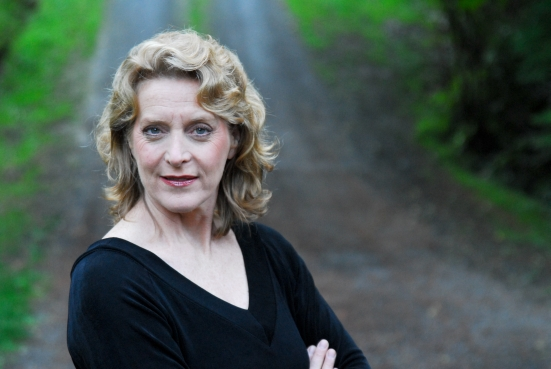

Welcome
Thank you for visiting my webpage. I'm delighted to share with you several samples of my singing as well as my current performance schedule. Please
EMAIL ME with any questions. Thank you.
If you're interested in receiving information about my future engagements, I'll be happy to include you on my
mailing list
Schedule
Mary Jo DuGaw
is a versatile singer whose musicality and clarity of tone has
allowed her to perform repertoire by Bach, Handel, Mozart, Haydn, Schubert,
Brahms, Puccini, Chabrier and Rodrigo with confidence and flexibility--and
in the company of some of the Northwest's finest musicians. Equally at ease
in the intimacy of the Recital Hall or on the Concert Stage, she has
appeared as Soprano Soloist with Seattle Symphony, Northwest Sinfonietta,
Philharmonia Northwest, Ensemble Vindobona and Seattle Choral Company. Mary Jo's theatricality and
interpretive style have put her in demand to perform lighter repertoire as
well, including Lehar, Romberg, Herbert, Porter, Lerner & Loewe, Rodgers &
Hammerstein, Lloyd Webber, Bernstein and Gershwin.
"DuGaw... lent a clear, ringing soprano to the works, drawing on her considerable capacity for grace and power."
-- Michael Hill, The News Tribune